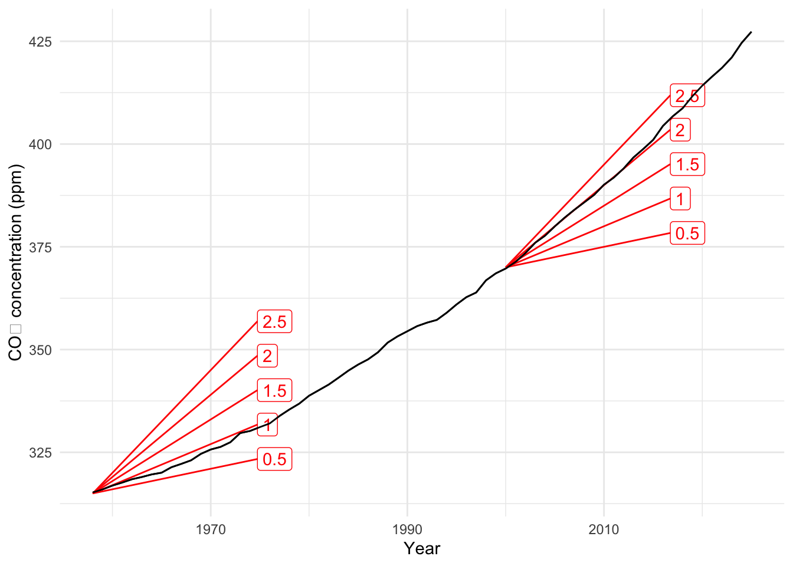

QR-I Assignment 8
Chapters 12 and 13 of the QR-A book
WarningRemember to hand in your work …
At any point, you can submit your answers by collecting them and uploading them to the class site.
No answers yet collected
If requested by your instructor, please identify here the people from whom you received assistance on this assignment.
If the answers that have been loaded automatically are not yours, press this button before starting your work:
ImportantDrill for Chapters 12 and 13 — not included in this assignment
The Chapter 12 and Chapter 13 drill questions are not part of Assignment 8. You will receive an email when drill questions for CH12 & CH13 are available for final exam studying. The CH12 and CH13 drills will not be required for this assignment, but I suggest you complete them when available to prepare for the exam.
For the exercises below, use the “collect answers” at the top of this page to submit your work.
NoteChapters 12 and 13 — Exercises
These exercises draw on rates of change (Ch 12) and accumulation (Ch 13): marginal rates, derivatives, and anti-differentiation.
Exercise 1 “The global rise in CO2 has nearly leveled off.” — BBC News, Nov. 6, 2025
The meaning of the above sentence seems plain. Or is it?
- Which of these do you think is closest to the meaning of the BBC quote?
hrc-1
The BBC news item is based on measurements of CO2 at the Mauna Loa observatory in Hawaii from March 1958 through October 2025. The data are available here. The graphic below shows the average measurement each year. The data have been annotated with slope roses. A slope rose helps you visually estimate the slope of the curve at a particular point by showing a short line segment there that matches the slope of the curve. (The units are ppm per year.)

- What is the rate of change of CO2 concentration with respect to time in 1970? Pick the closest answer.
hrc-2
- If the rate of change in (2) had held from 1970 through all the intervening time up to 2025, what would the current CO2 concentration be? Pick the closest answer.
hrc-3
- In year 2000, what was the rate of change in CO2 concentration with respect to time?
hrc-4
- Estimate the rate of change in CO2 in 2020-2025.
hrc-5
- Explain, as best you can, how the BBC quote is reflected in the actual data.
Exercise 2 Marginal tax rates (Ch 12)
Federal income tax for 2025 uses marginal rates: each rate applies only to income within that bracket, not to your whole income. The brackets for single filers (tax year 2025) are:
| Rate | Taxable income (single filer) |
|---|---|
| 10% | $0 to $11,925 |
| 12% | $11,926 to $48,475 |
| 22% | $48,476 to $103,350 |
| 24% | $103,351 to $197,300 |
| 32% | $197,301 to $250,525 |
| 35% | $250,526 to $626,350 |
| 37% | $626,351 and above |
Source: Federal income tax rates and brackets (IRS).
- A single filer has $50,000 in taxable income in 2025. How is the federal tax on that income calculated?
gcd-1-how
- For that same taxpayer with $50,000 taxable income, what is their marginal federal tax rate—i.e., the rate that applies to the next dollar of taxable income?
gcd-2-marg
- They get a raise and their taxable income goes from $50,000 to $51,000. How much federal tax do they owe on that additional $1,000 of income?
gcd-3-extra
- Because of marginal rates, when your taxable income rises, what happens to the fraction of each extra dollar you keep after federal income tax?
gcd-4-takehome
- When you get a raise that pushes you into a higher bracket (e.g., from 22% to 24%), what happens to your total after-tax income?
gcd-5-always-gain
- A raise always increases your after-tax income (you never end up with less). Even so, someone might feel a raise “isn’t worth it.” In a short paragraph, give two or more real reasons or trade-offs that might make a raise feel not worth it to someone. (Consider effort vs. take-home pay, benefits, taxes, or other factors we’ve discussed.)
Exercise 3 The New York Times Magazine (Nov. 30, 2025) reported on a surge in e-bike injuries. The article sensibly pointed to the rapid increase in e-bikes sales as a factor in the surge.
As the pandemic continued, the number of e-bike accidents increased. “You would expect that,” Alfrey says, “because sales were skyrocketing.” Indeed, in 2022, over a million e-bikes were sold in the United States, up from 287,000 in 2019, according to the Light Electric Vehicle Association.
The article pointed out that the increase in e-bike sales has not been as sharp as the increase in injuries.
During the same [three]-year1 period when nationwide sales quadrupled, e-bike injuries increased by a factor of 10, to 23,493 from 2,215, according to the National Electronic Injury Surveillance System. A study by the University of California, San Francisco, found that from 2017 to 2022, head injuries from e-bike accidents increased 49-fold.
- What do you think the units are for the reported e-bike sales?
whk-92-1
- What do you think the units are for the reported injuries?
whk-92-2
- What’s your opinion? Is it appropriate to compare the rapidly growing e-bike yearly sales to yearly injuries.
- What is the approximate doubling time for e-bike sales, according to the information presented in the article?
whk-92-4a
Explain the reasoning that led to your conclusion about the doubling time.
- Accident rates are typically proportional to exposure; the more an activity is undertaken, the larger the number of accidents per year associated with that activity. Which of these would you expect to be proportional to the number of accidents per year?
whk-92-5
Bicycle sales per year is a rate of change: the change in the number of bicycles divided by the change in time. We are given information about bicycle sales, but we need information about the total number of bikes on the road. Making this conversion in the form of information—from a rate of change of a quantity as opposed to to the quantity itself—can be accomplished by accumulating the rate of change over time.
To perform the accumulation, we need to look at the sales in each year of the period. We know the number of sales in 2019 and 2022: about 250,000 and one-million respectively.
- Using the numbers in the previous paragraph, how many doubling occurred from 2019 to 2022? How many years elapsed from 2019 to 2022?
whk-92-6
The doubling time is the span of years divided by the number of doublings. If D is the doubling time in years, then the proportional increase from year to year is double(1 / D).
We’ve done the calculation for you about bicycles sales in each year using the proportional increase from year to year. Your job is to use the accumulation method to calculate the number of bikes on the road in each year.
| Year | 2013 | 2014 | 2015 | 2016 | 2017 | 2018 | 2019 | 2020 | 2021 | 2022 |
|---|---|---|---|---|---|---|---|---|---|---|
| Sales | 15K | 25K | 40K | 60K | 100K | 160K | 250K | 400K | 630K | 1000K |
| On road | 15K | 40K | 80K | … | … | … | … | … | … | … |
- Assuming that the number of bikes on the road in any year consists of the bikes sold through that year, how many bikes were on the road in 2017?
whk-92-7
- Using the same assumption as in (7), how many bikes were on the road by 2019?
whk-92-8
- Using the same assumption as in (7), how many bikes were on the road by 2022?
whk-92-9
The article says that e-bike injuries increase 10-fold over the period from 2019 to 2022, while bike sales only increased 4-fold. Coincidentally, the number of bikes on the road increased by slightly more than 4-fold from 2019 to 2022, so the 10-fold increase in injuries does reflect a growing injury rate per bicycle.
The number of head injuries, in contrast, increased 49-fold from 2017 to 2022. But there was a 7-fold increase in the number of bicycles on the road. So the head injury rate per bicycle increased “only” 7 fold.
Exercise 4 From marginal rate to total (Ch 13)
Chapter 13 explains that the tax owed (as a function of income) is the accumulation of the marginal tax rate: that is, the total-tax function is the anti-derivative of the marginal-rate function.
- If the marginal tax rate is given as a function of income, finding total tax owed at each income is an example of:
erm-1-anti
- On a graph of marginal tax rate vs income, the total tax owed between income $A and income $B is represented by:
erm-2-area
- The textbook notes that “differentiation” and “anti-differentiation” are inverse operations. So if function (b) is total tax owed and function (a) is marginal tax rate, then:
erm-3-inverse
- Why is it useful to think of the tax table (marginal rates) as a function of income?
erm-4-useful
:::::
Footnotes
The article mistakenly says “four-year period.”↩︎